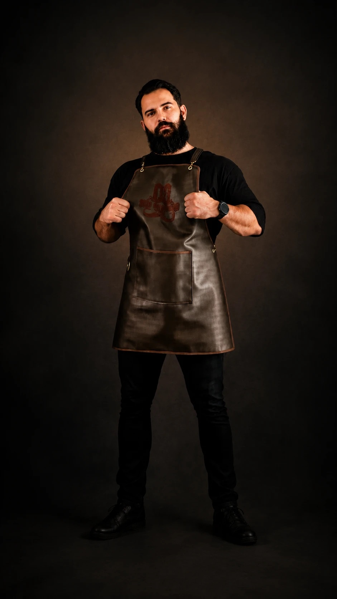
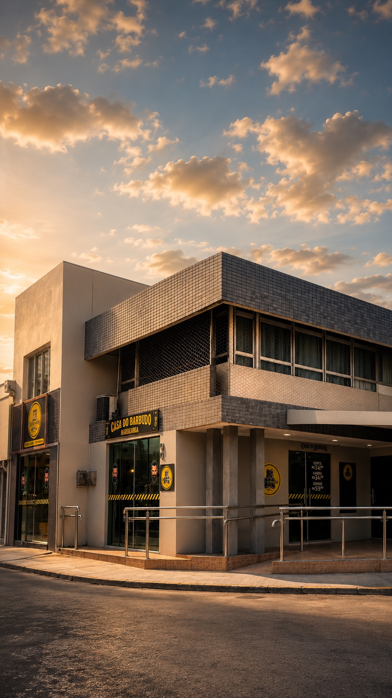
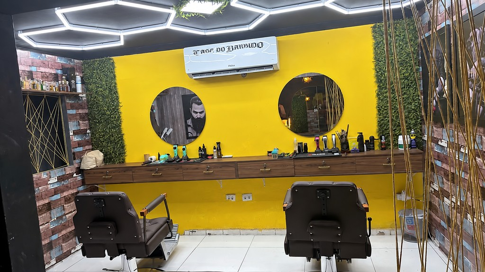
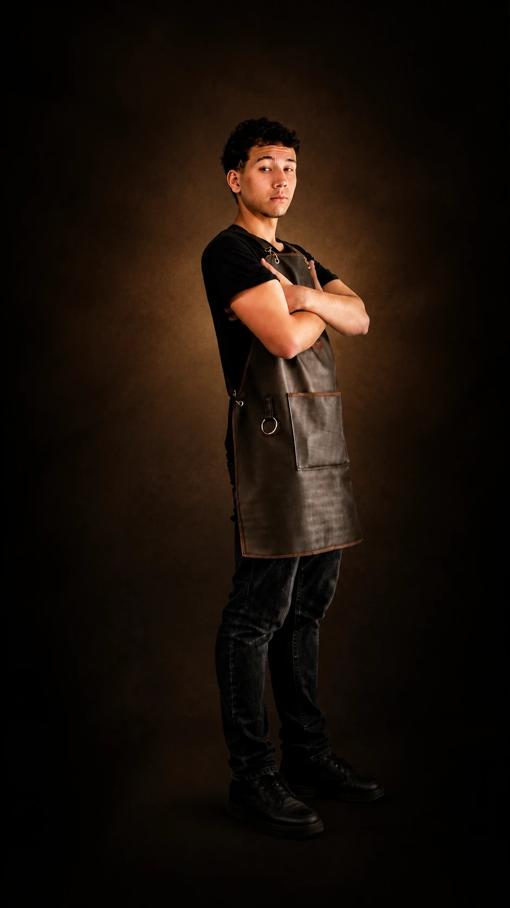
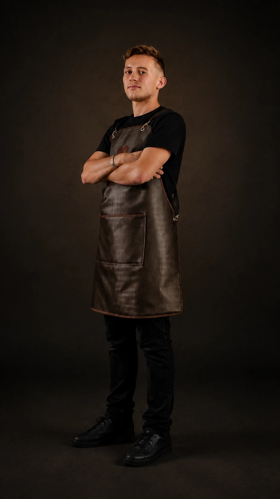

Diego Lima
Proprietário e barbeiro

Desde 2011 · Gravatá, PE
Corte, barba e cuidado em cada detalhe. Escolha seu serviço, indique um profissional e converse com a equipe para combinar seu horário.
Segunda a sábado · 9h às 13h e 14h às 20h
Quem está por trás
Barbeiro desde 2013 e proprietário da Casa do Barbudo, Diego Lima começa cada atendimento com uma conversa sobre o corte, o estilo e os cuidados com os fios.
Criador do Método B.B.C (Barbudo Barber Code), Diego também compartilha sua experiência com outros barbeiros em aulas, palestras e workshops.

Corte
Do corte infantil ao acabamento, encontre o serviço que procura e agende seu horário com a equipe.

Barba
Barba, barboterapia ou o combo com corte. Veja as opções e escolha o cuidado para a sua próxima visita.

A casa

Bancada amarela, cadeiras de barbeiro, luminárias no teto e um espaço para esperar com tranquilidade. Conheça a Casa do Barbudo por dentro antes da sua visita.
Quem cuida de você

Proprietário e barbeiro

Barbeiro

Barbeiro

Trabalhe conosco
É barbeiro e quer apresentar seu trabalho à Casa do Barbudo? Conte um pouco sobre sua experiência e mostre os cortes e cuidados que fazem parte da sua rotina.
Para conversar sobre oportunidades, fale diretamente com a equipe pelo WhatsApp.
Apresentar meu trabalhoPreencha uma breve apresentação e continue a conversa com a equipe pelo WhatsApp.
O ambiente


O que dizem sobre nós
Trechos de avaliações publicadas no Google.
“Ótimo espaço confortável e um ótimo atendimento”Ler no Google ↗
“Atendimento excelente. Ambiente confortável e organizado.”Ler no Google ↗
“Trabalho muito bem feito”Ler no Google ↗
Venha nos visitar
Praça Rodolfo de Moraes, nº 90
Gravatá, Pernambuco
(81) 9 9138-8128
Fale com a equipe pelo WhatsApp para combinar o serviço, o dia e o horário.
Agendar no WhatsApp